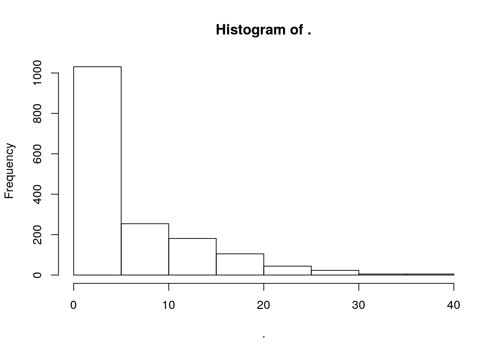
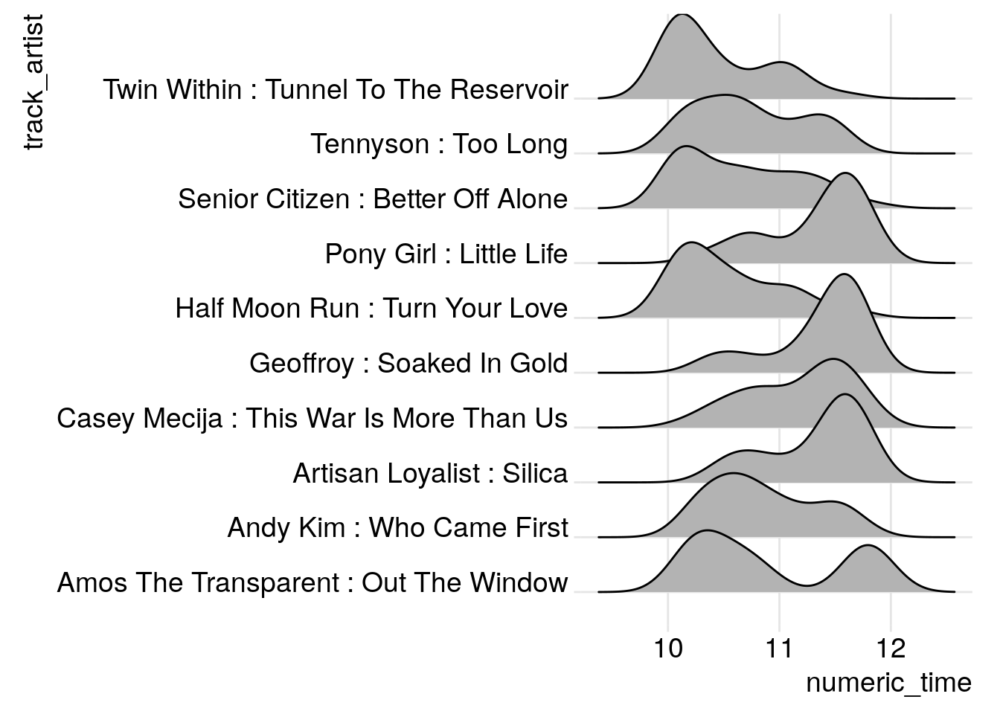

Preserving The Signal
Prologue
After a long hiatus I’m back to blogging with a very important project.
Since I blogged last there have been some changes in my life, I finished my Master’s degree and moved back from Newfoundland to Toronto. I started a new challenge as a programmer/analyst at a brain imaging research lab at the Hospital for Sick Children in Toronto. The project is working to understand the brain differences that underpin Autism Spectrum Disorder, Obsessive Compulsive Disorder, and Attention Deficit/Hyperactivity Disorder. It’s been a wonderful opportunity to use my data science skills for new challenges. Future blog posts will address some of my new work, but for now there is an issue very close to my heart I’d like to present.
The Signal is Coming to an End
After 10 years of the greatest Canadian radio program (ever), Laurie Brown is ending her iconic Radio 2 program “The Signal” to move on to new creative adventures. Laurie’s song and artist choices have become enduring favourites, and it saddens me to be losing the show. I decided it was important to do my part in preserving as much as I can of the shows history and provide the data for anyone who wants it.
The Plan
In this post I’ll show some interesting statistics about The Signal, including most played tracks, most played artists, and play time distributions for those tracks. I’ll also show how I downloaded as many of the show’s play logs as possible and assembled them into a variety of formats. I hope this data will be useful for music recommendations for years to come. Additionally, I’ll show how to use the spotify API to get streaming links for as many of the tracks as possible.
The Data
The data is now available for download
- For most, an excel spreadsheet with the data here
- For the data geek, a tab separated file with all the data here
The CBC play logs had the 391 most recent episodes of The Signal available. In the episodes Laurie played 10,140 tracks over the 782 hours of air time, each track is tagged with the artist, album, and play date/time. In the data set there are 1648 unique tracks to love, and 1371 are on spotify, with a direct url to the track included in the data sheet.
A First Look
Let’s look at some interesting features of the data-set. If you’re more interested in the music please ignore the code and jump to the output!
suppressPackageStartupMessages({
library(dplyr)
library(ggjoy)
})
signal <-
read.table("https://cdn.rawgit.com/cfhammill/signal_scraping/477bea5f/signal_frame_full.tsv"
, header = TRUE) %>%
mutate(track_artist = paste(Artist, ":", Title))Top 10 artists
top_artists <-
signal$Artist %>%
table %>%
sort(decreasing = TRUE) %>%
head(10)
top_artists## .
## Patrick Watson Andrew Judah Radiohead
## 100 78 71
## Evening Hymns Paper Beat Scissors James Blake
## 61 59 58
## Dear Criminals Sufjan Stevens Casey Mecija
## 57 56 55
## Dan Mangan + Blacksmith
## 55Pleased to see Patrick Watson as the most played artist, and Sufjan Stevens in there. Patrick Watson was played 100 times, so approximately 1/4 of episodes. Given repetition rates on normal radio programs, it’s pretty astonishing the most played artist appears in only 1/4 of episodes.
Top 10 tracks
top_tracks <-
signal %>%
.$track_artist %>%
table %>%
sort(decreasing = TRUE) %>%
head(10)
top_tracks## .
## Half Moon Run : Turn Your Love
## 38
## Senior Citizen : Better Off Alone
## 37
## Artisan Loyalist : Silica
## 36
## Casey Mecija : This War Is More Than Us
## 36
## Tennyson : Too Long
## 36
## Andy Kim : Who Came First
## 33
## Pony Girl : Little Life
## 33
## Twin Within : Tunnel To The Reservoir
## 33
## Amos The Transparent : Out The Window
## 32
## Geoffroy : Soaked In Gold
## 32Half Moon Run’s Turn Your Love comes out on top, played 38 times, although it’s a pretty tight heat at the top with Senior Citizen’s Better Off Alone through to Tennyson’s Too Long within 2 plays. My fiance and I have been using this top 10 as a playlist on spotify the past few nights and I highly recommend it, all ten tracks are exceptional.
Distribution of Play Counts
signal %>%
.$track_artist %>%
table %>%
hist
Pretty steep decay in play distribution, with over 1000 played fewer than five times. Digging in a little:
signal %>%
.$track_artist %>%
table %>%
`==`(1) %>%
sum## [1] 545545 of the tracks are only played once over the 391 episodes.
Play Times
Mostly as an excuse to use a joy plot, I decided to look at how uniform the distribution of play times were for the top 10 tracks.
create_numeric_time <-
function(time)
case_when(nchar(time) < 5 ~ as.numeric(substr(time, 1,2))
, TRUE ~ as.numeric(substr(time, 1,2)) +
as.numeric(substr(time,4,5))/60)
signal %>%
filter(track_artist %in% names(top_tracks)) %>%
mutate(numeric_time = create_numeric_time(Time)) %>%
ggplot(aes(x = numeric_time, y = track_artist, group = track_artist)) +
geom_joy() +
theme_joy()## Warning in eval_bare(f[[3]], env): NAs introduced by coercion## Picking joint bandwidth of 0.207
Very cool, there seem to be some starter songs like Tunnel to the Reservoir and Turn your Love, and some finishers like Silica and Soaked in Gold. And a clear bimodal pick in Out the Window.
The Logs
One nice feature of the CBC Radio 2 is that it gives listeners access to play logs for each of their music programs. Here’s an example of what the play log looks like.

Now clicking through each day’s play log and extracting the useful data would be a nightmare, so I needed a programmatic solution. Unfortunately, to my knowledge, CBC doesn’t provide a public API for their play log data, so I had to find another way.
Finding the Logs
I knew the data was somewhere, and if I was lucky there would be a way to download it directly. Likely there would be an internal API used to fetch the log data.
In firefox I opened the inspector on the The Signal log

I combed the html for a bit and learned that the play logs were getting set by the “knockout” javascript framework, but couldn’t track down where the data was coming from. So I switched to the network tab and reloaded the page, looking for promising GET calls.

The GetPlaylog query highlighted above looks promising. Let’s go to that page

Outstanding, the query servers JSON directly with the whole playlog for the day. And the query is an easily understandable format. I played with the query string a bit to see if I could just get The Signal directly, but to no avail. In any case it’s easy to post process and just extract the logs I want.
The Code
We’ll use some packages for this
suppressPackageStartupMessages({
library(dplyr)
library(httr)
library(lubridate)
library(purrr)
})We use httr for handling all the requests, dplyr and purrr for general programming ergonomics, and lubridate to make doing stuff with dates easier.
Next we’re going to write a function that gets us a playlog for a given date
get_day_log <-
function(day){
GET(url, query = list(stationId = 99, date = day))
}The query string needs a stationId (always 99) and a date. The json object returned by the query is a list with a single list of programs. To unpack it, we’ll use httr::content to extract the json as a list. The we’ll filter the programs list with the boolean test for the program title being “The Signal”
extract_signal <-
function(get_req){
tryCatch({
progs <- content(get_req)$programs
signal <- Filter(function(prog) prog$Title == "The Signal"
, progs)
signal[[1]]
}, error = function(e) return(NA))
}Notice that here I’m not checking http status codes or anything. If anything goes wrong it with throw an error when I try to unpack the object, and with the tryCatch it’ll just return an NA. This could certainly be made more robust, but this is fine for now.
Getting The Logs
Using lubridate we’ll set up a date range to query. I experimented with the query string in the browser and noticed the logs go back somewhere between one and two years. Interestingly the web interface only lets you go back one year, but constructing the query ourselves lets us go back a bit further. So we’ll make a date sequence from two years ago to the last episode (August 4th, 2017 at the time of writing.)
days <- seq(ymd("2015-08-04"), ymd("2017-08-04"), by = "day")Now we’ll loop over over the days and run our GET requests. This will take some time, as the CBC server can be a bit flaky.
signal_data <-
lapply(days,
function(day)
extract_signal(get_day_log(day)))We expect that some days in the beginning won’t have logs (too far back) and weekends for example don’t have the show. So we’ll filter all the days where the playlog is NA.
has_signal <-
sapply(signal_data, function(x) !identical(x, NA))
signal_days <- days[has_signal]
signal_logs <- signal_data[has_signal]Tidy Data
Next we want to turn the nested json into a tidy data frame. First we’re going to augment the log object with the day of the program. The json surprisingly didn’t keep track of this
signal_logs_dated <-
mapply(
function(log, day){
log$Date <- day
log
}
, log = signal_logs
, day = signal_days
, SIMPLIFY = FALSE)Next we’re going to write a pretty gnarly function to unpack the json. We need to loop over the logs (days), and then over the tracks, creating data frame rows and then binding them all up
signal_frame <-
lapply(signal_logs_dated, function(log){
lapply(log$Tracks, function(track){
with(track
, data_frame(Title = Title
, Artist = Artists[[1]]
, Time = Date
, Date = log[["Date"]]
, Album = Album
, Composers =
`if`(length(Composers) == 0
, NA
, Composers[[1]])))
}) %>% bind_rows
}) %>% bind_rowsAnd now we have a nice tidy table of tracks to explore. But I wasn’t done yet. I wanted to get spotify data so that each track can be accessed easily.
Spotify
The first thing I had to do to get spotify data was to sign up for spotify developer. After signing up I created an app called “signal_scraping”, whitelisted the callback uri “http://localhost:1410”. These steps took a bit of trial and error but I eventually got set up. I stored my id and secret in a file.
To issue requests against the spotify API I needed to authorize my program and get an access token.
auth <- read.csv("oauth/signal_scraping_auth", header = FALSE)
## Extract the id and secret"
id <- auth[1,2]
secret <- auth[2,2]
## Setup the authentication endpoint and app
spotify_oep <- oauth_endpoint(authorize = "https://accounts.spotify.com/authorize"
, access = "https://accounts.spotify.com/api/token")
app_auth <- oauth_app("signal_scraping", key = id, secret = secret)
## Get a token
token <- oauth2.0_token(spotify_oep, app_auth, use_basic_auth=TRUE)Now that I’ve authenticated I can setup queries against the search endpoint
To query subjects and tracks I need to replace spaces in artist/track names with +. Additionally if either includes a comma, I don’t know how to deal with this, so I just take the first element before the comma
format_query <-
function(q)
strsplit(gsub(" ", "+", q), ",")[[1]][1]Next I need a function that constructs the query strings to get track/subjects. In this case, if there is an error, I want to return an empty data frame row, indicating the track isn’t on spotify.
find_track <- function(artist, track){
empty_track <- data_frame(Artist = artist
, Title = track
, url = NA
, spotify_id = NA
, spotify_uri = NA)
tryCatch({
resp <-
GET("https://api.spotify.com/v1/search"
, query = list(q = sprintf("artist:%s track:%s"
, format_query(artist)
, format_query(track))
, type = "track"
, limit = 1)
, config(token = token))
track_obj <- content(resp)$tracks$items[[1]]
data_frame(Artist = artist
, Title = track
, url = track_obj$external_urls$spotify
, spotify_id = track_obj$id
, spotify_uri = track_obj$uri)
}, error = function(e){
cat(artist, ":", track, "\n")
return(empty_track)
})
}The spotify API returns an even more complex json object, but since I’ve limited the query to return 0 or 1 results, I can access the tracks list, and grab the first item. From this I want to extract the spotify url this will open spotify to this track. I also want the id and uri for further programmatic manipulation (like adding them all to a playlist for example.).
Getting the spotify data
Let’s get the unique tracks, since we don’t want to issue more requests than necessary. Then run the find_track function on each track/artist pair.
unique_tracks <-
signal_frame %>%
mutate(ta = paste0(Artist, " : ", Title)) %>%
filter(!duplicated(ta))
spotify_results <-
transpose(unique_tracks) %>%
lapply(function(t) find_track(t$Artist, t$Title)) %>%
bind_rowsThis runs pretty quick, printing each artist/track pair that can’t be found. There were some that suprised me like Bjork tracks, but a suprisingly large number of them are found without trouble. This could also be made more robust for example by dealing with comma separated artists or tracks differently, or integrating strategic wildcards, but this is a decent first pass.
Final Thoughts
As sad is it is to see The Signal come to an end, I’m grateful for the many years of great music Laurie has provided me. I’m excited to see what her future projects will bring. I’m sure I will be finding new songs to love in this data set for years to come.
There is lots more to learn about the data, scraping bandcamp and soundcloud for the rest of the songs would be a good place to start. I’d also be interested in looking at other information about the tracks, for example looking at tempo distributions across show both within shows and across them.